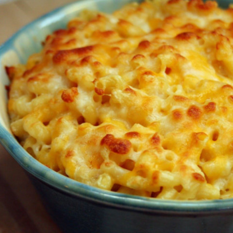

Mac n cheese

Description
One of ideas for lunch.
Lunch that is both tasty and on a budget too. Also super cheesy.
Ingredients:
- 450gr macaroni
- 150-200gr cheddar
- 150-200gr other cheese of choice
- 110gr butter
- 75gr AP
- 700ml milk
- 240ml heavy cream
- Salt and pepper to taste
Steps:
- Bring a pot of salted water to a boil.
- Add macaroni and boil for up to 1 minute under the packaged instructions (8-9 minutes).
- In a large bowl, mix together the grated cheeses.
- In a large pot, add unsalted butter and heat over medium heat until melted. Once melted, whisk in all-purpose flour and cook for 1 minute while stirring often. Gradually stream in whole milk and heavy cream while whisking.
- Once thickened, add in the mixed grated cheeses (1.5 cups at a time) and whisk until melted and combined. Season to taste with salt and an optional pinch of grated nutmeg.
- Drain macaroni and pour into the cheese sauce and fold together. Coat thoroughly.
- In a lightly greased 9x13 baking dish, add in half of the cheesy macaroni followed by the remaining grated cheese and the other half of macaroni.
- Optionally toss the remaining grated cheese and add to the top layer of the macaroni.
- Bake at 180C for 20-25 minutes. Blast it under the broiler until just browned on top.